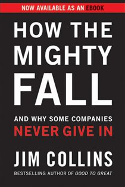

Library › Business & Startups
How the Mighty Fall — Summary & Key Lessons

And why some companies never give in — the five stages of decline, diagnosable while there's still time.
📖 OPEN THE FULL INTERACTIVE BREAKDOWN →🌐 Read it in Hindi, Hinglish, Gujarati, Tamil & 22 more languages — free, with audio.
💡 The Big Idea
After studying greatness (Good to Great, Built to Last), Collins turned to autopsies: how do once-great companies die? His research found decline is NOT usually caused by competition, technology, or bad luck — it's self-inflicted, and it follows FIVE MARKED STAGES: (1) Hubris Born of Success — success reinterpreted as entitlement, the flywheel's real drivers forgotten; (2) Undisciplined Pursuit of More — growth beyond the ability to staff with the right people, leaps outside the core; (3) Denial of Risk and Peril — internal warnings explained away while external results still look strong, blame pointed outward; (4) Grasping for Salvation — the silver-bullet phase: savior CEOs, dramatic pivots, blockbuster acquisitions, each 'bold' move accelerating the spiral; (5) Capitulation to Irrelevance or Death. The hope in the data: the disease is detectable early (stages 1–3 look like health from outside), and companies have recovered from as deep as stage 4 — by returning to disciplined fundamentals, never by leaping for magic.
🧠 The 5 Key Lessons
Lesson 1: Stage 1 — Hubris Born of Success
Stage 1
Decline begins at the peak, invisibly: success starts being treated as DESERVED rather than earned — 'we're successful because we're special' replaces 'we're successful because of specific things we do, which may stop working.' Collins' markers: the flywheel's true drivers go unexamined (leaders lose the ability to explain WHY they win, so they can't tell which changes are dangerous); learning stops at the top (success is a terrible teacher — it whispers that you're done learning); and the best people stop asking 'what must we do better?' in favor of 'how do we deserve even more?' The subtle tell he emphasizes: NEGLECT of the core business while leadership gets excited by the next adventure — the primary flywheel treated as a boring cash machine that will spin forever untended. It won't; flywheels run on continuous push, and hubris is the moment pushing stops.
📖 Example: Circuit City — a Good to Great hall-of-famer — began dying exactly this way: leadership's attention wandered to CarMax and new ventures while the core electronics stores decayed (staffing gutted, stores tired), the flywheel that built everything treated as… Read the full example →
⚡ Do this: Run Collins' humility audit: can your leadership articulate, specifically, WHY the business wins — and which of those causes are weakening? List what made the flywheel turn originally; mark what's being neglected. Success explains itself last.
Lesson 2: Stage 2 — Undisciplined Pursuit of More
Stage 2
Hubris funds ambition, and stage 2 is ambition without discipline: MORE growth, MORE acquisitions, MORE markets — pursued past the organization's ability to execute. Collins' law of decline here is Packard's Law (after HP's founder): 'no company can consistently grow revenues faster than its ability to get enough of the RIGHT PEOPLE to implement that growth and still become a great company.' When growth outruns people, bureaucracy replaces judgment (rules for the wrong hires instead of standards with the right ones), key seats fill with bodies instead of stars, and cash gets aimed at leaps the core can't support. The trap's cruelty: stage 2 LOOKS like boldness — revenue climbing, headlines glowing — and critics of the pace sound like cowards. But discontinuous leaps into arenas where you can't be best, made under growth pressure rather than insight, are the classic stage-2 signature.
📖 Example: Rubbermaid — once ranked America's most admired company — set a goal of one new product PER DAY, entered new categories at sprint pace, and drowned in its own launches: quality slipped, costs bloated, retailers (especially a hardballing Walmart) revolted at… Read the full example →
⚡ Do this: Test every growth initiative against Packard's Law: do we have the right people ALREADY IN SEATS for this — not hireable someday, seated now? Track your key-seat ratio (percentage of crucial roles filled with the right person). When it drops below ~90%, growth itself is the risk.
Lesson 3: Stage 3 — Denial of Risk and Peril
Stage 3
By stage 3, internal warning lights blink — margins eroding, engagement falling, near-misses accumulating — but external results still look fine, and leadership DISCOUNTS the negatives: ambiguous data gets the positive spin, setbacks get external blame (currency, weather, 'irrational' competitors), and big bets proceed without confirming evidence. Collins' behavioral markers: leaders amplify good news and explain away bad; teams stop arguing (the healthy conflict-then-commit rhythm decays into either fake consensus or courtroom politics); and — the deadliest — the AUTOPSY WITHOUT BLAME disappears: failures get spun instead of dissected. His borrowed test from a NASA-schooled culture: 'when you're the leader, people tell you what you want to hear — so you must actively hunt the disconfirming data.' Stage 3 is the last exit where recovery is cheap; it's also the stage designed to feel like nothing's wrong.
📖 Example: Zenith kept explaining away Japanese TV-makers' share gains for a decade — dumping accusations, currency complaints, 'quality-blind consumers' — every explanation pointing outward while the product gap widened. Collins' counter-exhibit is the famous… Read the full example →
⚡ Do this: Institutionalize disconfirmation: in every major review, require someone to present the bear case with real data; run blameless autopsies on every setback (facts first, spin banned); and count your near-misses like an airline does — they're the cheapest warnings you'll ever get.
Lesson 4: Stage 4 — Grasping for Salvation
Stage 4
When decline becomes visible to all, the fateful fork arrives: return to the disciplines that build greatness — or GRASP for salvation. Stage 4 is the grasping: the charismatic savior CEO from outside, the bold unproven strategy, the transformational acquisition, the cultural 'revolution,' the game-changing product bet-the-company launch. Each lever produces a burst of hope (and often a stock pop) followed by deeper decline, because none address the eroded flywheel — and each grasp consumes the cash and credibility the real recovery needed. Collins' data is stark: companies that recovered from deep decline did it with calm, disciplined leaders (usually insiders or culture-fits) making CONSISTENT, boring moves — while the fallen share a highlight reel of dramatic rescues. The tell of stage 4 is the VOCABULARY: 'revolutionary,' 'transformation,' 'new era' — panic wearing vision's clothes.
📖 Example: HP hired celebrity CEO Carly Fiorina (maximum charisma, minimum HP-DNA), bet on the mega-merger with Compaq, and spent a decade in identity chaos. Against it, Collins' recovery exhibits: Anne Mulcahy at Xerox — an insider nobody called visionary — who… Read the full example →
⚡ Do this: If you're in visible trouble (company, career, finances), ban the silver-bullet move for 90 days. Write the boring recovery list — the fundamentals that eroded — and execute those first. Judge every rescue proposal with one question: does this rebuild the flywheel, or just change the story?
Lesson 5: Stage 5 — and the Way Back: Never Capitulate
Stage 5 / The Well-Founded Hope
Stage 5 has two doors: capitulation to irrelevance (selling out, shrinking into a shadow) or death. Cash runs out, options close, and each grasping cycle has spent more of both. But Collins' final chapters are the point of the book: the mighty CAN return. His recovery cases (Xerox, Nucor's early crisis, IBM, Nordstrom's stumbles) share a pattern — leaders who accepted the brutal facts AND never lost faith in ultimate return (the Stockdale Paradox reprised), rebuilt via the flywheel one disciplined turn at a time, and treated survival cash like oxygen. His closing distinction: failure is external, capitulation is internal — a choice; and 'the path out of darkness' belongs to those 'constitutionally incapable' of choosing it. The book's deepest reframe: falling isn't the disgrace — every great institution stumbles; the signature of greatness is the comeback, and the five stages exist precisely so you can find yourself on the map while the map still helps.
📖 Example: Collins closes with Churchill — the wilderness decade, the serial 'finished' verdicts, the return at the darkest hour, and the line that carries the book: 'never give in, never give in, never, never, never.' The corporate mirror: Xerox at stage 4.5 —… Read the full example →
⚡ Do this: Map yourself (or your company) onto the five stages honestly — most people find themselves earlier on the curve than they feared, which IS the good news. Then write the never-capitulate clause: the brutal facts accepted in writing, the faith retained in writing, and the next single flywheel turn scheduled — this week.
✅ 5-Step Action Plan
- Audit for hubris: can leadership explain exactly why you win — and what's weakening?
- Apply Packard's Law: no growth beyond right-people-in-seats capacity.
- Hunt disconfirming data; run blameless autopsies; count near-misses.
- In trouble, ban silver bullets for 90 days — execute the boring fundamentals.
- Find your stage on the map; write the never-capitulate clause.
💬 Best Quotes from How the Mighty Fall
- “The signature of the truly great versus the merely successful is not the absence of difficulty, but the ability to come back from setbacks, even cataclysmic catastrophes, stronger than before.”
- “Great companies can stumble, badly, and recover.”
- “The path out of darkness begins with those exasperatingly persistent individuals who are constitutionally incapable of capitulation.”
Interactive version: mark lessons as read, listen in your language, share quote cards.